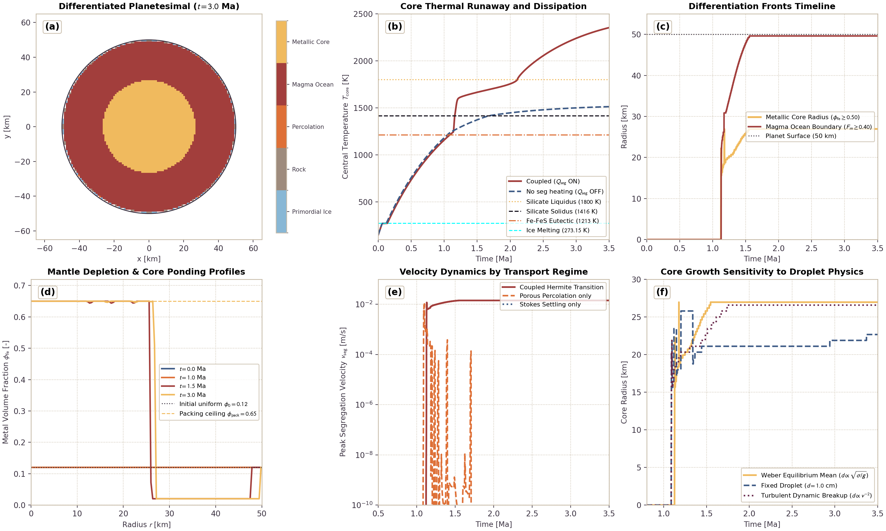
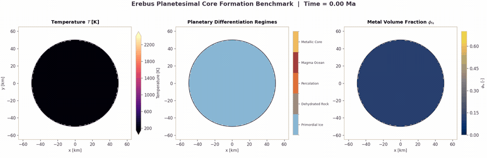

Iron Core Formation and Metal-Silicate Segregation
This page documents the physical formulation, mathematical limits, and numerical implementation of iron core formation in Erebus.jl. The model couples porous Fe-FeS percolation through solid silicate matrices, Stokes droplet settling through silicate magma oceans, segregation dissipation heating, and mass-conservative transport.
1. Physical Motivation
Early planetary differentiation separates dense metallic iron from lighter silicate rock to form a central metallic core and an overlying silicate mantle. In early Solar System planetesimals, this differentiation is driven by internal decay heating from short-lived radionuclides ($^{26}\text{Al}$ and $^{60}\text{Fe}$).
The Fe-FeS binary system has a low eutectic temperature ($T_{\text{eutectic}} \approx 1213\text{ K}$), melting hundreds of Kelvin below the silicate solidus ($T_{\text{solidus}} \approx 1400\text{ K}$). Metal-silicate segregation operates in two distinct physical regimes:
- Porous Percolation Regime ($F_m \le 0.40$): In crystalline silicate rock, liquid Fe-FeS melt percolates along mineral grain boundaries under gravity once the liquid metal fraction exceeds the percolation threshold ($\phi_{\text{crit}} \approx 0.05$). The flow is governed by porous Darcy dynamics with Kozeny-Carman permeability.
- Magma Ocean Stokes Settling Regime ($F_m \ge 0.50$): When silicate melting exceeds the rheological transition threshold ($\phi_{\text{rheo}} \approx 0.40$), the rigid crystalline framework breaks down into a low-viscosity crystal suspension. Dense liquid metal emulsifies into droplets whose diameter is governed by capillary-hydrodynamic balance. Droplets sink rapidly through the magma ocean following Stokes drag with hindered settling corrections.
- Continuous Mush Handover: In the transition mush zone ($F_m \in [0.40, 0.50]$), segregation velocity blends smoothly between porous percolation and droplet settling via a cubic Hermite polynomial.
- Dissipation Energetics: Sinking metal releases gravitational potential energy. This gravitational energy is dissipated as frictional heat, accelerating interior warming and thermal runaway during runaway core formation.
- Property Blending: Bulk density, thermal conductivity, and volumetric heat capacity update dynamically in space as metal migrates toward the planetary center.
2. Theoretical Formulation
The physical theory, chemical equation of state models (Sanloup et al., 2000; Morard et al., 2014), permeability relations, and droplet breakup mechanics are derived in detail in Iron Core Formation and Metal Segregation.
Key constitutive formulations validated on this page include:
- Mobile Metal Volume Fraction ($\phi_m$): $\phi_m = \chi_m(T) \cdot X_{\text{fe,bulk}}, \quad \chi_m(T) = \text{clamp}\left(\frac{T - T_{\text{eutectic}}}{\Delta T_{\text{metal}}}, 0, 1\right)$
- Porous Darcy Percolation Velocity ($v_{\text{perc}}$): $v_{\text{perc}} = \frac{k_{\text{metal}}(\phi_m)}{\phi_m \, \eta_{\text{metal}}} \Delta\rho \, g \left(\frac{\phi_m - \phi_{\text{residual}}}{\phi_m}\right)$
- Magma Ocean Stokes Settling Velocity ($v_{\text{Stokes}}$): $v_{\text{Stokes}} = \frac{2}{9} \frac{\Delta\rho \, g \, r_d^2}{\eta_{\text{silicate}}} f_{\text{HR}} f_{\text{hindered}}$
- Continuous Hermite Handover ($v_{\text{seg}}$): Smooth $C^1$ transition across the rheological breakdown interval $F_m \in [F_{\text{settle,start}}, F_{\text{perc,end}}]$: $v_{\text{seg}} = (1 - w) v_{\text{perc}} + w v_{\text{settle}}, \quad w = 3\xi^2 - 2\xi^3$
- Gravitational Dissipation Heating ($Q_{\text{seg}}$): $Q_{\text{seg}} = \phi_{m,\text{curr}} \Delta\rho \, g \, v_{\text{seg}}$
- Volume-Weighted Material Property Blending: $\rho = (1 - X_{\text{fe}}) \rho_{\text{silicate}} + X_{\text{fe}} \rho_{\text{metal}}$ $\rho c_p = (1 - X_{\text{fe}}) (\rho c_p)_{\text{silicate}} + X_{\text{fe}} (\rho c_p)_{\text{metal}}$ $k = (1 - X_{\text{fe}}) k_{\text{silicate}} + X_{\text{fe}} k_{\text{metal}}$
3. Discretization and Mass Conservation
Metal segregation is solved on the Eulerian grid using a finite-volume drift-flux formulation.
Local CFL Subcycling
The Stokes-Darcy hydrodynamic timestep $\Delta t_{\text{hydro}}$ is typically governed by silicate convection and thermal diffusion ($\sim 10^3\text{ yr}$). Settling velocities in low-viscosity magma can produce local Courant numbers exceeding unity. To maintain explicit stability, the segregation solver executes adaptive subcycling:
\[\Delta t_{\text{CFL}} = \text{cfl} \cdot \min_{i,j} \left( \frac{\Delta x}{|v_{x,\text{seg}}|}, \frac{\Delta y}{|v_{y,\text{seg}}|} \right)\]
\[N_{\text{sub}} = \min\left( \left\lceil \frac{\Delta t_{\text{hydro}}}{\Delta t_{\text{CFL}}} \right\rceil, N_{\text{max}} \right)\]
\[\Delta t_{\text{sub}} = \frac{\Delta t_{\text{hydro}}}{N_{\text{sub}}}\]
Multi-Dimensional Flux Limiters and Marker Capacity Redistribution
To guarantee strict non-negativity and prevent exceeding maximum packing fraction $\phi_{\text{pack}}$ on 2D staggered grids:
- Outflow Limiter: For cell $(i, j)$ donating metal across horizontal and vertical faces, total face outflow $Out_{\text{total}} = \sum \Phi_{\text{out}} \Delta t_{\text{sub}}$ must not exceed available metal mass $m_{\text{avail}}$. All outward fluxes are scaled by $\alpha_{\text{out}} = \min(1.0, m_{\text{avail}} / Out_{\text{total}})$.
- Inflow Limiter: Total incoming flux $In_{\text{total}} = \sum \Phi_{\text{in}} \Delta t_{\text{sub}}$ must not exceed available pore capacity $m_{\text{cap}} = (\phi_{\text{pack}} - \phi_m) V_{\text{cell}} \cdot n_m$. All inward fluxes are scaled by $\alpha_{\text{in}} = \min(1.0, m_{\text{cap}} / In_{\text{total}})$.
- Capacity-Weighted Marker Update: When net cell mass changes are distributed back to markers, markers in cells gaining metal receive increments proportional to their remaining room below $\phi_{\text{pack}}$. Markers in cells losing metal scale proportionally. This guarantees that individual markers never violate $[0, \phi_{\text{pack}}]$, even with non-uniform initial distributions.
Machine-Precision Conservation
Provided all initial marker bulk metal fractions satisfy $0 \le X_{\text{fe,bulk}} \le \phi_{\text{pack}}$, after subcycled finite-volume transport, any floating-point truncation residual is corrected via a uniform, bounded mass correction over eligible interior planet markers below the packing ceiling $\phi_{\text{pack}}$. The global relative mass error satisfies:
\[\frac{|M_{\text{metal}}(t) - M_{\text{metal}}(0)|}{M_{\text{metal}}(0)} < 10^{-12}\]
in the drift-flux solver, and $< 10^{-10}$ in coupled multi-physics simulation loops.
4. Planetesimal Core Formation Benchmark Suite
The core formation benchmark simulates a 50 km radius planetesimal over 3.5 Ma of early solar system evolution. The benchmark starts from a completely homogeneous, cold primordial mixture of water ice ($\phi_{\text{ice}} = 0.30$), metallic iron ($\phi_{\text{fe}} = 0.12$), and silicate rock matrix ($\phi_{\text{rock}} = 0.58$) throughout the entire body at $T = 150\text{ K}$.
Physical Differentiation Timeline
The planetesimal differentiates in four sequential stages driven by $^{26}\text{Al}$ radioactive decay in the rock component:
- Primordial Homogeneous Accretion ($t = 0\text{ Ma}$): The body starts completely cold ($T = 150\text{ K}$) and uniformly icy throughout its entire volume.
- Pore Ice Melting and Rock Desiccation ($t \approx 0.3 - 0.8\text{ Ma}$): Radioactive decay warms the interior above 273.15 K. Pore ice melts in the interior and dehydrates the rock, while surface conductive cooling maintains a cold outer lid ($T < 273.15\text{ K}$) where primordial ice is preserved dynamically.
- Porous Fe-FeS Percolation ($t \approx 1.0 - 1.4\text{ Ma}$): Interior temperatures reach the Fe-FeS eutectic ($T_{\text{eutectic}} = 1213\text{ K}$). Molten metallic alloy exceeds the percolation threshold ($\phi_{\text{crit,perc}} = 0.05$) and drains inward through crystalline silicate pores.
- Magma Ocean Stokes Settling and Core Ponding ($t \approx 1.5 - 3.5\text{ Ma}$): Silicate melting crosses the solidus ($1400\text{ K}$) and reaches the rheological breakdown threshold ($F_m \ge 0.40$). Dense liquid metal droplets settle rapidly through the low-viscosity magma suspension. Droplets pond at the planetary center to form a segregated metallic core of radius $\approx 27\text{ km}$ at maximum packing ($\phi_{\text{pack}} = 0.65$), capped by an iron-depleted silicate mantle ($\phi_{\text{fe}} = 0.02$) and an outer primordial icy crust.
Benchmark Results
The multi-panel summary figure illustrates the critical physical mechanisms:

- (a) Differentiated Body Map ($t = 3.0\text{ Ma}$): 2D Cartesian slice showing the segregated central iron core (gold), surrounded by an iron-depleted silicate mantle (red), and preserved cold primordial crust (blue).
- (b) Core Thermal Runaway: Shows central temperature evolution $T_{\text{core}}(t)$. Gravitational dissipation heating ($Q_{\text{seg}}$ ON) releases potential energy as metal settles, boosting peak core temperatures above the case without dissipation heating ($Q_{\text{seg}}$ OFF).
- (c) Differentiation Fronts Timeline: Traces the radial expansion of the metallic core boundary ($\phi_{\text{fe}} \ge 0.50$, reaching $27\text{ km}$) and the magma ocean boundary ($F_m \ge 0.40$).
- (d) Radial Metal Concentration Profiles: Shows $\phi_{\text{fe}}(r)$ at $t = 0.0, 1.0, 1.5,$ and $3.0\text{ Ma}$. Bulk iron begins uniformly at $0.12$, depletes to the residual threshold $0.02$ in the mantle, and ponds up to $\phi_{\text{pack}} = 0.65$ in the central core.
- (e) Transport Regime Comparison: Compares segregation velocities for three configurations: porous percolation only (slow, $\sim 10^{-7}\text{ m/s}$), Stokes droplet settling only, and the coupled Hermite transition model.
- (f) Droplet Size Physics Sensitivity: Compares core radius growth for constant droplet diameter ($0.5\text{ cm}$), Weber equilibrium balance ($d \propto \sqrt{\sigma / g}$), and dynamic turbulent breakup ($d \propto v^{-2}$).
2D Simulation Video
The animation below displays the 2D Cartesian revolved core formation benchmark over 3.5 Ma starting from a completely uniform icy mixture. The panels display internal temperature with phase boundaries (left), compositional differentiation regimes (center), and bulk metal volume fraction $\phi_{\text{fe}}$ (right).

A high-framerate MP4 video is available at ../assets/core_formation_differentiation.mp4.
5. Literature Anchors
- Yoshino, T., Walter, M. J., & Katsura, T. (2003). Core formation in planetesimals triggered by permeable flow. Nature, 422(6928), 154-157. https://doi.org/10.1038/nature01524
- Rubie, D. C., Melosh, H. J., Reid, J. E., Liebske, C., & Righter, K. (2003). Mechanisms of metal-silicate equilibration in the terrestrial magma ocean. Earth and Planetary Science Letters, 205(3-4), 239-255. https://doi.org/10.1016/S0012-821X(02)01044-0
- Monteux, J., Ricard, Y., Coltice, N., Dubuffet, F., & Aguilar, M. (2009a). A model of metal-silicate separation on growing planets. Geophysical Journal International, 179(1), 515-526. https://doi.org/10.1111/j.1365-246X.2009.04321.x
- Monteux, J., Jellinek, A. M., & Buffett, B. A. (2009b). Heating of the early Earth by core formation: Physical mechanisms and thermal impact. Journal of Geophysical Research, 114(B6), B06404. https://doi.org/10.1029/2008JB006166
- Deguen, R., Olson, P., & Cardin, P. (2011). Experiments on turbulent metal-silicate mixing in a magma ocean. Earth and Planetary Science Letters, 310(3-4), 303-313. https://doi.org/10.1016/j.epsl.2011.08.019
- Deguen, R., Landeau, M., & Olson, P. (2014). Turbulent metal-silicate mixing, fragmentation, and equilibration in magma oceans. Earth and Planetary Science Letters, 391, 274-287. https://doi.org/10.1016/j.epsl.2014.01.034
- Rubie, D. C., Nimmo, F., & Melosh, H. J. (2015). Formation of Earth's Core. In Treatise on Geophysics (2nd ed., Vol. 9, pp. 43-79). Elsevier. https://doi.org/10.1016/B978-0-444-53802-4.00152-4
- Lichtenberg, T., Golabek, G. J., Burn, R., Meyer, M. R., Alibert, Y., Gerya, T. V., & Mordasini, C. (2019). A water budget dichotomy of rocky protoplanets from 26Al-heating. Nature Astronomy, 3(4), 307-313. https://doi.org/10.1038/s41550-018-0688-5
- Richardson, J. F., & Zaki, W. N. (1954). Sedimentation and fluidisation: Part I. Transactions of the Institution of Chemical Engineers, 32, 35-53.
- Taylor, G. I. (1934). The formation of emulsions in definable fields of flow. Proceedings of the Royal Society of London. Series A, 146(858), 501-523. https://doi.org/10.1098/rspa.1934.0169